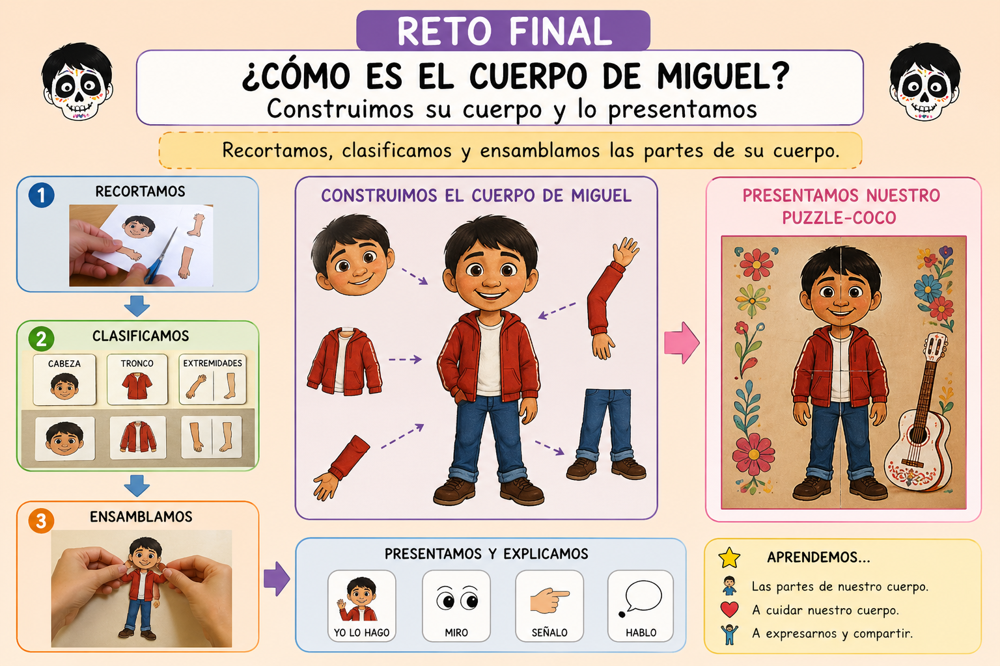
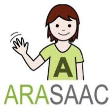

PRODUCTO FINAL
DESCRIPCIÓN DEL PRODUCTO FINAL
El producto final de esta Situación de Aprendizaje consiste en la construcción manipulativa y presentación del cuerpo humano a partir del personaje “Miguel” (Coco). El alumnado deberá recortar, clasificar y ensamblar las diferentes partes del cuerpo (cabeza, tronco y extremidades), elaborando una representación global que refleje lo aprendido a lo largo de la secuencia didáctica.
Este proceso no se limita a una actividad plástica, sino que implica la identificación, reconocimiento y organización de las partes del cuerpo, favoreciendo la interiorización de los contenidos desde un enfoque práctico y significativo. El producto se completa con el montaje del “Puzzle-Coco” y su posterior presentación, donde el alumnado comunicará su trabajo mediante apoyos gestuales, verbales o visuales, en función de sus capacidades.
Se trata de un producto final globalizador, funcional y altamente motivador, alineado con la metodología TEACCH y el enfoque DUA, que permite la participación activa de todo el alumnado, respetando sus ritmos y necesidades. Además, promueve el desarrollo de habilidades no solo cognitivas, sino también comunicativas, sociales y de autorregulación, siendo especialmente adecuado para un aula TEA de 4-5 años.

Herramienta: ARASAAC 
Para el desarrollo del producto final, se empleará como herramienta principal ARASAAC, orientada a la creación de apoyos visuales mediante pictogramas.
El objetivo de esta herramienta es facilitar la comprensión, organización y expresión del aprendizaje, especialmente en un aula TEA, donde los apoyos visuales resultan esenciales para el acceso al currículo. A través de ARASAAC, se elaborarán secuencias visuales, paneles de vocabulario y apoyos estructurados que guiarán al alumnado durante todo el proceso de construcción y presentación del cuerpo humano.
Su elección responde, en primer lugar, a su adecuación al contexto educativo, ya que permite diseñar materiales adaptados a alumnado con dificultades en la comunicación y comprensión. En segundo lugar, destaca por su versatilidad, posibilitando la creación de múltiples recursos (tarjetas, rutinas, secuencias, apoyos visuales…) que pueden integrarse tanto en actividades manipulativas como en momentos de comunicación y evaluación.
En términos de accesibilidad, ARASAAC elimina barreras de comprensión al ofrecer un lenguaje visual claro y universal, favoreciendo la participación de todo el alumnado y ajustando el contenido a distintos niveles de competencia. Asimismo, promueve un aprendizaje significativo, ya que permite que el alumnado no solo interactúe con los contenidos, sino que los comprenda, los anticipe y los utilice para expresarse.
Como complemento, estos apoyos visuales podrán integrarse en una presentación sencilla (por ejemplo, Genially), donde, con ayuda del docente, el alumnado podrá mostrar su producto final de forma visual, organizada y comprensible.